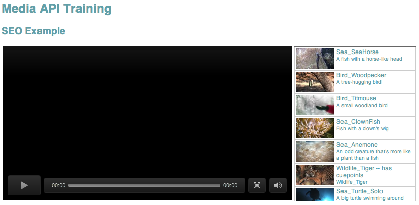
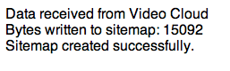

These examples use PHP and the Video Cloud Media API to enhance SEO by writing video metadata into the page, and by generating a video sitemap. You should be able to adapt these examples easily to other server-side languages using the Media API wrappers found on opensource.brightcove.com
To run these SEO sample files:
defaults write com.apple.Finder AppleShowAllFiles YES -- and you will need to relaunch Finder after entering this)#LoadModule php5_module libexec/apache2/libphp5.sochmod 755 [path-to-folder]chmod 755 [path-to-folder]chmod 777 [path to folder]http://10.0.1.13/~rcrooks1969/SupportSite/seo/seo_videositemap.phpIf you got things set up correctly, the output when you view the pages should look like this:
seo-playlist-in-page.php:
seo_videositemap.php:
Both samples use similar high-level logic:
This example uses the Media_API search_videos method to return a set of videos. You could use other methods to return videos or specific playlists if you prefer.
<?php
// This code example uses the PHP Media API wrapper
// For the PHP Media API wrapper, visit opensource.brightcove.com
// Include the BCMAPI SDK
require('bc-mapi.php');
// Include the Smarty templating system
// for more info: http://www.smarty.net/
require('Smarty-3.1.8/libs/Smarty.class.php');
// instantiate smarty
$smarty = new smarty();
// set smarty directories
$smarty->setTemplateDir('smarty/templates/');
$smarty->setCompileDir('smarty/templates_c/');
$smarty->setCacheDir('smarty/cache/');
$smarty->setConfigDir('smarty/configs/');
// Instantiate the class, passing it our Brightcove API tokens (read, then write)
$bc = new BCMAPI(
'WDGO_XdKqXVJRVGtrNuGLxCYDNoR-SvA5yUqX2eE6KjgefOxRzQilw..',
'Jyiei-T0_tDMwct8bUns819VTkfvkt9iX2mnIfkc8GNnREmW2YTG6A..'
);
// Define our parameters
$params = array(
'video_fields' => 'id,name,shortDescription,thumbnailURL'
);
// Set our search terms
$terms = array(
'all' => 'tag:mapi_ex3',
);
// Make our API call
$videos = $bc->search('video', $terms, $params);
Once the videos are returned, the array of video DTOs is assigned to Smarty, which then inject the data into the template defined in /smarty/templates/seo_playlist.tpl:
$smarty->assign('videos' , $videos);
// display the template populated with data
$smarty->display('seo_playlist.tpl');
{include file="header.tpl"}
<h3>SEO Example</h3>
<table class="player" cellpadding="2" cellspacing="0" border="0">
<tbody>
<tr>
<td valign="top">
<!-- Start of Brightcove Player -->
<div style="display:none">
</div>
<!--
By use of this code snippet, I agree to the Brightcove Publisher T and C
found at https://accounts.brightcove.com/en/terms-and-conditions/.
-->
<script language="JavaScript" type="text/javascript" src="http://admin.brightcove.com/js/BrightcoveExperiences.js"></script>
<object id="myExperience" class="BrightcoveExperience">
<param name="bgcolor" value="#FFFFFF" />
<param name="width" value="571" />
<param name="height" value="305" />
<param name="playerID" value="921267190001" />
<param name="playerKey" value="AQ~~,AAAA1oy1bvE~,ALl2ezBj3WG3MLvDx9F9zkV06cNK00ey" />
<param name="isVid" value="true" />
<param name="isUI" value="true" />
<param name="dynamicStreaming" value="true" />
<!-- params for Universal Player API -->
<param name="includeAPI" value="true" />
<param name="templateReadyHandler" value="BCL.onTemplateReady" />
</object>
<script type="text/javascript">brightcove.createExperiences();</script>
<!-- End of Brightcove Player -->
</td>
<td>
<div id="playlist">
{foreach $videos as $video}
{strip}
<div class="playlist"><a onclick="BCL.playVideo({$video->id})"><img class="thumbnail" height="40" width="75" src="{$video->thumbnailURL}"/><div class="description"><span style="font-size:12px;">{$video->name}</span><br/>{$video->shortDescription}</div></a></div>
{/strip}
{/foreach}
</tbody></table>
</td>
</tr>
</tbody>
</table>
<div id="playlistCollection"></div>
{literal}
<script type="text/javascript">
// namespace to keep all the "global" vars together
var BCL = {};
// Player API scripting
// event listener for the player being ready
BCL.onTemplateReady = function (event) {
BCL.player = brightcove.api.getExperience("myExperience");
// get a reference to the video player
BCL.videoPlayer = BCL.player.getModule(brightcove.api.modules.APIModules.VIDEO_PLAYER);
}
// play video function
BCL.playVideo = function(videoID) {
BCL.videoPlayer.loadVideoByID(videoID);
}
</script>
{/literal}
</body>
</html>
You will notice that the template includes Smart Player API processing to load the videos in the player when they are clicked. The included header template is all HTML, including CSS code to render the video list in a way that resembles a playlist in the player.
In this example, a simple search_videos call without search parameters is used to return all videos. The data is again passed to Smarty, to insert it into an XML template for a video sitemap:
<?php
// This code example uses the PHP Media API wrapper
// For the PHP Media API wrapper, visit opensource.brightcove.com
// Include the BCMAPI SDK
require('bc-mapi.php');
// Include the Smarty templating system
// for more info: http://www.smarty.net/
require_once('Smarty-3.1.8/libs/Smarty.class.php');
// instantiate smarty
$smarty = new smarty();
// enable caching
$smarty->setCaching(true);
// set a separate cache_id for each unique URL
$cache_id = md5($_SERVER['REQUEST_URI']);
// set smarty directories
$smarty->setTemplateDir('smarty/templates/');
$smarty->setCompileDir('smarty/templates_c/');
$smarty->setCacheDir('smarty/cache/');
$smarty->setConfigDir('smarty/configs/');
// Instantiate the class, passing it our Brightcove API tokens (read, then write)
$bc = new BCMAPI(
'WDGO_XdKqXVJRVGtrNuGLxCYDNoR-SvA5yUqX2eE6KjgefOxRzQilw..',
'Jyiei-T0_tDMwct8bUns819VTkfvkt9iX2mnIfkc8GNnREmW2YTG6A..'
);
// Define our parameters
$params = array(
'video_fields' => 'id,name,shortDescription,thumbnailURL,tags,customFields,length'
);
// Set our search terms
$terms = array();
// Make our API call
$videos = $bc->search('video', $terms, $params);
echo('Data received from Video Cloud<br/>');
// assign the data to smarty
$smarty->assign('videos' , $videos);
// set the filename
$sitemapfile = 'sitemap.xml';
// generate the sitemap populated with data
$sitemap = $smarty->fetch('seo_sitemap.tpl', $cache_id);
echo('Bytes written to sitemap: ');
echo $filelength = file_put_contents($sitemapfile, $sitemap);
echo('<br/>Sitemap created successfully');
?>
<?php
// This code example uses the PHP Media API wrapper
// For the PHP Media API wrapper, visit opensource.brightcove.com
// Include the BCMAPI SDK
require('bc-mapi.php');
// Include the Smarty templating system
// for more info: http://www.smarty.net/
require_once('Smarty-3.1.8/libs/Smarty.class.php');
// instantiate smarty
$smarty = new smarty();
// enable caching
$smarty->setCaching(true);
// set a separate cache_id for each unique URL
$cache_id = md5($_SERVER['REQUEST_URI']);
// set smarty directories
$smarty->setTemplateDir('smarty/templates/');
$smarty->setCompileDir('smarty/templates_c/');
$smarty->setCacheDir('smarty/cache/');
$smarty->setConfigDir('smarty/configs/');
// Instantiate the class, passing it our Brightcove API tokens (read, then write)
$bc = new BCMAPI(
'WDGO_XdKqXVJRVGtrNuGLxCYDNoR-SvA5yUqX2eE6KjgefOxRzQilw..',
'Jyiei-T0_tDMwct8bUns819VTkfvkt9iX2mnIfkc8GNnREmW2YTG6A..'
);
// Define our parameters
$params = array(
'video_fields' => 'id,name,shortDescription,thumbnailURL,tags,customFields,length'
);
// Set our search terms
$terms = array();
// Make our API call
$videos = $bc->search('video', $terms, $params);
echo('Data received from Video Cloud<br/>');
// assign the data to smarty
$smarty->assign('videos' , $videos);
// set the filename
$sitemapfile = 'sitemap.xml';
// generate the sitemap populated with data
$sitemap = $smarty->fetch('seo_sitemap.tpl', $cache_id);
echo('Bytes written to sitemap: ');
echo $filelength = file_put_contents($sitemapfile, $sitemap);
echo('<br/>Sitemap created successfully');
?>
<urlset xmlns="http://www.sitemaps.org/schemas/sitemap/0.9" xmlns:video="http://www.google.com/schemas/sitemap-video/1.1">
<!-- basic video site map - for more info and additional optional fields, see http://support.google.com/webmasters/bin/answer.py?hl=en&answer=80472 -->
{foreach $videos as $video}
{strip}
<url>
<loc>http://support.brightcove.com/en/training-videos</loc>
<video:video>
<video:thumbnail_loc>{$video->thumbnailURL}</video:thumbnail_loc>
<video:title>{$video->name}</video:title>
<video:description>{$video->shortDescription}</video:description>
<video:player_loc allow_embed="yes" autoplay="ap=1">{$video->customFields->pageurl}</video:player_loc>
<video:duration>{$video->length / 1000}</video:duration>
{foreach $video->tags as $tag}
<video:tag>{$tag}</video:tag>
{/foreach}
<video:category>{$video->customFields->videotopic}</video:category>
<video:live>no</video:live>
</video:video>
</url>
{/strip}
{/foreach}
</urlset>